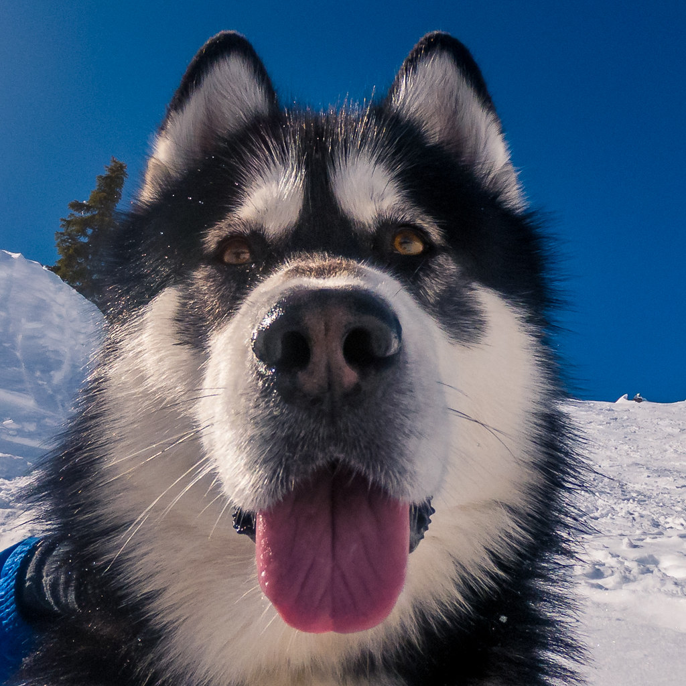

Le Malamute d'Alaska est un chien de traineau primitif originaire des Etats-Unis. Il ressemble fortement au Husky, mais n'a aucune origine en commun avec celui-ci.
Il est sociable et affectueux envers les humains, et apprécie la compagnie de ses congénères. Attention, caractère bien trempé !